dir.create(path = "data")
dir.create(path = "output")Introduction to Multivariate Statistics in R
An introduction to using the R statistics package and the RStudio interface for multivariate statistics.
Learning objectives
- Read data from files into R
- Run Principal Components Analysis (PCA) and graphically display results
- Perform Discriminant Function Analysis (DFA) and interpret the results
Setup
Workspace organization
First we need to setup our development environment. Open RStudio and create a new project via:
- File > New Project…
- Select ‘New Directory’
- For the Project Type select ‘New Project’
- For Directory name, call it something like “r-multivar” (without the quotes)
- For the subdirectory, select somewhere you will remember (like “My Documents” or “Desktop”)
We need to create two folders: ‘data’ will store the data we will be analyzing, and ‘output’ will store the results of our analyses.
Download data
- Download data file from https://raw.githubusercontent.com/jcoliver/learn-r/gh-pages/data/otter-mandible-data.csv or https://bit.ly/otter-data (the latter just re-directs to the former). These data are a subset of those used in a study on skull morphology and diet specialization in otters doi: 10.1371/journal.pone.0143236.
- Move the file to the data folder you created above.
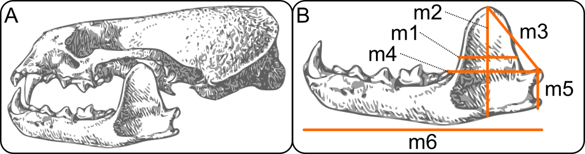
{kind=link}
Reading data into R for PCA
otter <- read.csv(file = "data/otter-mandible-data.csv",
stringsAsFactors = TRUE)Missing data can cause problems in downstream analyses, so we will just remove any rows that have missing data. Here we replace the original data object otter with one in which there are no missing values. Note, this does not alter the data in the original file we read into R; it only alters the data object otter currently in R’s memory.
otter <- na.omit(otter)And because R does not automatically re-number the rows when we drop those with NA values, we can force re-numbering via:
rownames(otter) <- NULLSide note: Before we go any further, it is important to note that the remainder of this lesson uses what is known as “base R”, or only those parts of R that come along when you download and install R. This means it does not include any code that comes from packages such as tidyverse. Users of tidyverse packages (especially ggplot2) may cringe at what you see below. It is left to the reader as an exercise to execute the plots using the superb data visualization package ggplot2. If you are so inclined, take a look at the separate lessons on ggplot2 and tidyverse for more information.
Principal Components Analysis
Why PCA? Very briefly, Principal Components Analysis is a way of re-describing the variation observed in your data. It serves as a means of reducing the dimensionality of data (i.e. reducing the number of predictor variables) and is often used for exploratory analyses. The full rationale and mathematically underpinnings are waaaaaaaay beyond the scope of this lesson, and other resources already do a fairly good job of explaining PCA. If you want a few perspectives for a relatively novice audience, check out this Why PCA? (or “how to explain PCA to your grandmother”) thread at Stack Overflow. If you are more inclined to print media, I highly recommend B.F.J. Manly’s Multivariate Statistical Methods: A primer (2004), which provides an excellent introduction to a variety of multivariate statistic topics.
Running PCA
So, on to the code:
pca_fit <- prcomp(x = otter[, -c(1:3)], scale. = TRUE)That’s PCA.
Give yourself a pat on the back.
But what does that code actually do? We pass the data to the x parameter, skipping the first three columns [, -c(1:3)] because those columns have the specimen information (species identity and accession information). We also set the scale. parameter to TRUE because we want to transform the data so each column has a mean of zero and a variance of one.
To look at the results, we use the summary command and assign the output to a variable.
pca_summary <- summary(pca_fit)
ls(pca_summary) # Lists the objects produced by summary[1] "center" "importance" "rotation" "scale" "sdev"
[6] "x" We are interested to know (1) what are the important factors that emerge from the PCA (i.e. which ones explain a lot of variation) and (2) what do these factors actually say about the variation observed in our data. For (1), look at the importance object in the summary:
pca_summary$importance PC1 PC2 PC3 PC4 PC5
Standard deviation 2.256654 0.6219432 0.5454519 0.3255933 0.2708043
Proportion of Variance 0.848750 0.0644700 0.0495900 0.0176700 0.0122200
Cumulative Proportion 0.848750 0.9132200 0.9628000 0.9804700 0.9926900
PC6
Standard deviation 0.2093664
Proportion of Variance 0.0073100
Cumulative Proportion 1.0000000The second row, Proportion of Variance, shows how much variation in the data is described by each component; notice that the first component, PC1, explains the most variance, 0.8487, or 84.87% of the total variance, the second component explains the second most variance (6.45%), and so on, with each successive component explaining a lower proportion of the total variance. For the remainder of the lesson, we will focus on the first two principal components, PC1 and PC2, which together explain 91.32% of the observed variation in the skull measurements.
A brief interpretion of PCA results (part one)
But what about that variation? What are the principal components actually explaining? To address this (point 2 from above), we need to look at the loadings of the PCA. The rotation object from the summary call has the information we are interested in. Focus on the values in the PC1 column:
pca_summary$rotation PC1 PC2 PC3 PC4 PC5 PC6
m1 0.4268529 -0.17321735 0.22703406 -0.02536558 -0.6606796 -0.5469067
m2 0.4075959 0.49503042 0.25708539 -0.50388745 -0.1654951 0.4913515
m3 0.4056830 -0.45770175 0.38536919 -0.25533585 0.6293816 -0.1268993
m4 0.3908318 0.03103549 -0.83871167 -0.30435539 0.1229400 -0.1873594
m5 0.4026960 0.56665446 0.08297005 0.60659893 0.3025684 -0.2243763
m6 0.4149336 -0.43976047 -0.15340120 0.46868237 -0.1825671 0.5982600Looking at the signs of the loadings, we see they are all the same (positive), thus this first component, explaining most of the variation in the measurements, is really just reflecting variation in size. That is, since all the loadings have the same sign, large values for one skull measurement generally coincide with large values for other skull measurements for this first component.
The second principal component is a little more interesting. Two of the variables, m1 and m4 don’t contribute much to the component (the magnitudes of their respective loadings (0.173 and 0.031) are small compared to the other four skull measurements). The remaining four indicate a shape difference, with one pair of variables having positive loadings and one pair having negative loadings. This interpretation of the second principal component would benefit greatly from a graphical representation.
Plotting PCA results
Plotting the results of a PCA can be done using a simple call to the biplot function:
biplot(x = pca_fit)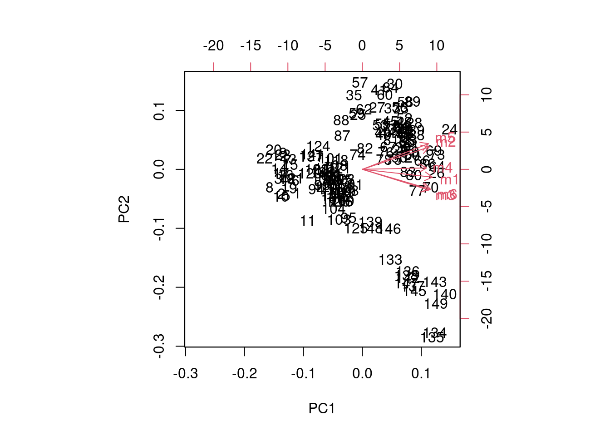
But that figure really leaves much to be desired, and gets messier with larger sample sizes and more variables. If you want to find out more about how that figure is produced, look at the documentation for biplot (?biplot).
Instead, we can plot the scores of the first two principal components using the standard plot command, using the scores that are stored in the x object of pca_fit:
plot(x = pca_fit$x[, 1],
y = pca_fit$x[, 2],
xlab = "PC 1",
ylab = "PC 2")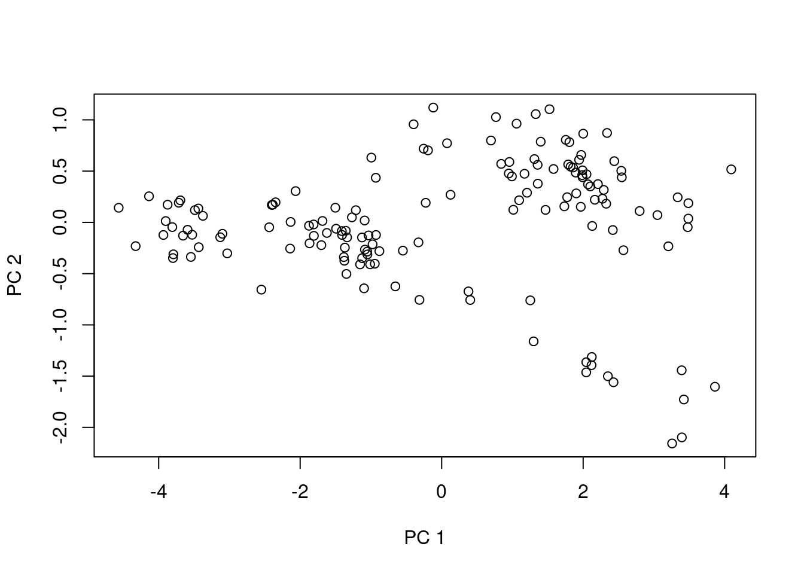
Well, maybe that plot isn’t so useful either. It does help a bit if we color the points by species, though. We start by creating a small vector which only contains the species names; we’ll use this for the legend and for assigning colors:
# Pull out the unique values in the 'species' column
species_names <- unique(otter$species)
species_names # a quick look at the values in the vector[1] A. cinerea E. lutris L. canadensis P. brasiliensis
Levels: A. cinerea E. lutris L. canadensis P. brasiliensisWe want a vector of colors, too, one for each species. Since there are four species, we have four colors:
legend_cols <- c("black", "green4", "cyan3", "red3") The legend_cols vector will be used for the legend, but we still need a color vector for each sample. We can use the indexing of the species_names and legend_cols to create a vector which has a value for each of the points we want to plot. Here we first assign all values the same color (the first color in the legend_cols vector). Then we compare values in the otter$species column to the second, third, and fourth possible values in the species_names vector.
pt_cols <- rep(x = legend_cols[1], length = nrow(otter))
pt_cols[otter$species == species_names[2]] <- legend_cols[2]
pt_cols[otter$species == species_names[3]] <- legend_cols[3]
pt_cols[otter$species == species_names[4]] <- legend_cols[4]Question: Why did we not do the assignment / comparison for the first element in
species_namesandlegend_cols?
And finally, we draw the plot, adding point colors through the col parameter and adding the legend after the plot is drawn.
plot(x = pca_fit$x[, 1],
y = pca_fit$x[, 2],
xlab = "PC 1",
ylab = "PC 2",
pch = 19,
col = pt_cols)
legend("bottomleft",
legend = species_names,
pch = 19,
col = legend_cols,
cex = 0.8)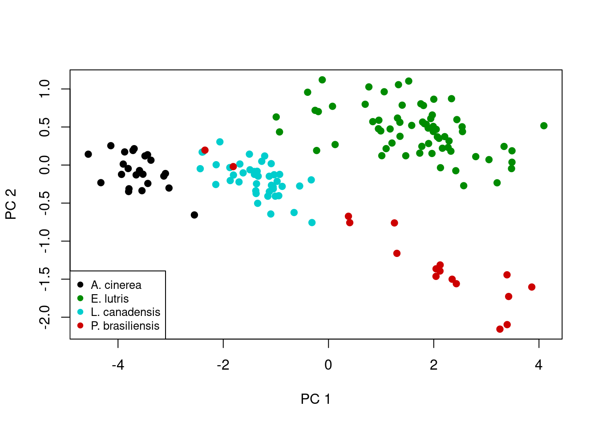
A brief interpretion of PCA results (part two)
Ah, now this plot is a little more interesting. Note the first principal component scores along the x-axis, and there is actually pretty clear separation among some of species. As mentioned above, this principal component is really an index of size, which we can visualize by looking at the actual skull measurements across the four species. First note the distribution of the four species along the x-axis: A. cinerea has the lowest values, E. lutris and P. brasiliensis have the highest values, and L. canadensis has values in the middle. We can use boxplot to show the distributions of each measurement for each species:
# Set-up a multi-panel graph (2 rows, 3 columns), filling row by row
par(mfrow = c(2, 3), las = 2)
# Plot each of the six measurements in a different plot, leaving x-axis title
# out of the plot
boxplot(formula = m1 ~ species, data = otter, xlab = NA)
boxplot(formula = m2 ~ species, data = otter, xlab = NA)
boxplot(formula = m3 ~ species, data = otter, xlab = NA)
boxplot(formula = m4 ~ species, data = otter, xlab = NA)
boxplot(formula = m5 ~ species, data = otter, xlab = NA)
boxplot(formula = m6 ~ species, data = otter, xlab = NA)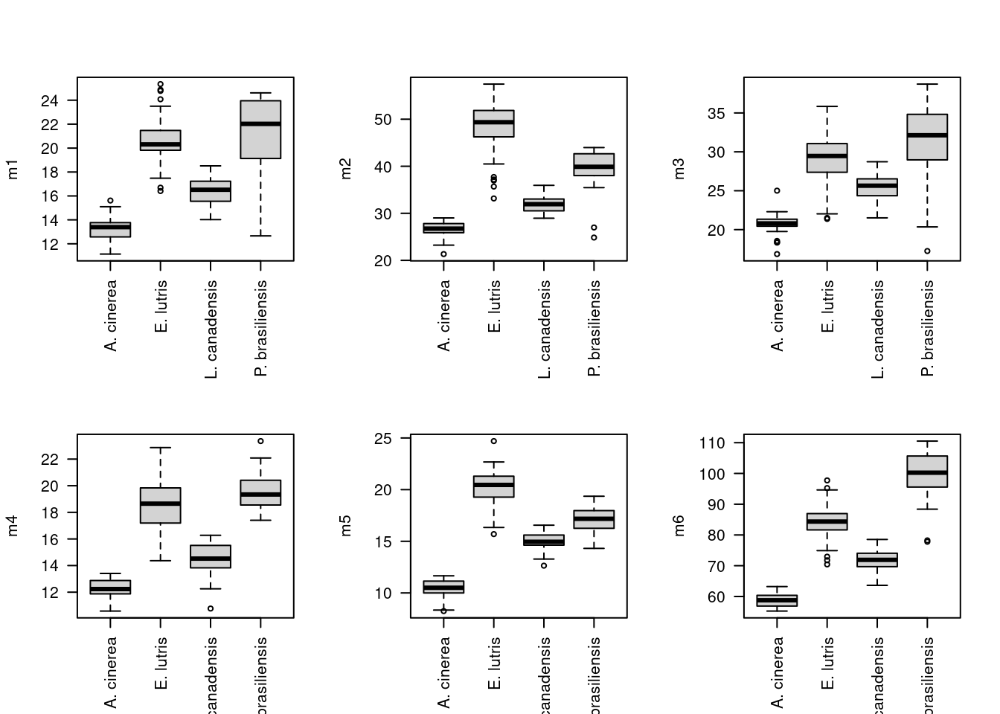
# Restore graphing defaults
par(mfrow = c(1, 1), las = 0)Looking at these boxplots, we see that indeed, for all six measurements, A. cinerea has the lowest values, E. lutris and P. brasiliensis have the highest values, and L. canadensis has values in the middle.
Remember that second principal component, PC2, on the y-axis of our scatterplot:

And the loadings for the first two components are:
PC1 PC2
m1 0.4268529 -0.17321735
m2 0.4075959 0.49503042
m3 0.4056830 -0.45770175
m4 0.3908318 0.03103549
m5 0.4026960 0.56665446
m6 0.4149336 -0.43976047In this second principal component, as mentioned before, m1 and m4 don’t contribute much to the component (the magnitudes of their respective loadings, 0.173 and 0.031, respectively, are small compared to the other four skull measurements). The remaining four loadings indicate a shape difference, with one pair of variables having positive loadings and one pair having negative loadings. This component describes variation in the four variables: high values of PC1 correspond to high values of m2 and m5 and low values of m3 and m6, while specimens with low values of PC1 have the opposite (low m2 and m5, high m3 and m6). You can confirm this looking again at a boxplot for these values, focusing only on those four variables of interest for the two species that are differentiated along PC2, E. lutris and P. brasiliensis:
# Pull out the data for the two species of interest
two_species <- c("E. lutris", "P. brasiliensis")
otter_two <- otter[otter$species %in% two_species, ]
# Drop the levels corresponding to the two species we excluded
otter_two$species <- factor(otter_two$species)
# Prepare colors
legend_cols <- c("black", "red3")
pt_cols <- rep(x = legend_cols[1], length = nrow(otter_two))
pt_cols[otter_two$species == two_species[2]] <- legend_cols[2]
# Plot m6 against m5
plot(x = otter_two$m5,
y = otter_two$m6,
xlab = "m5",
ylab = "m6",
pch = 19,
col = pt_cols)
legend("topright", legend = two_species, pch = 19, col = legend_cols, cex = 0.8)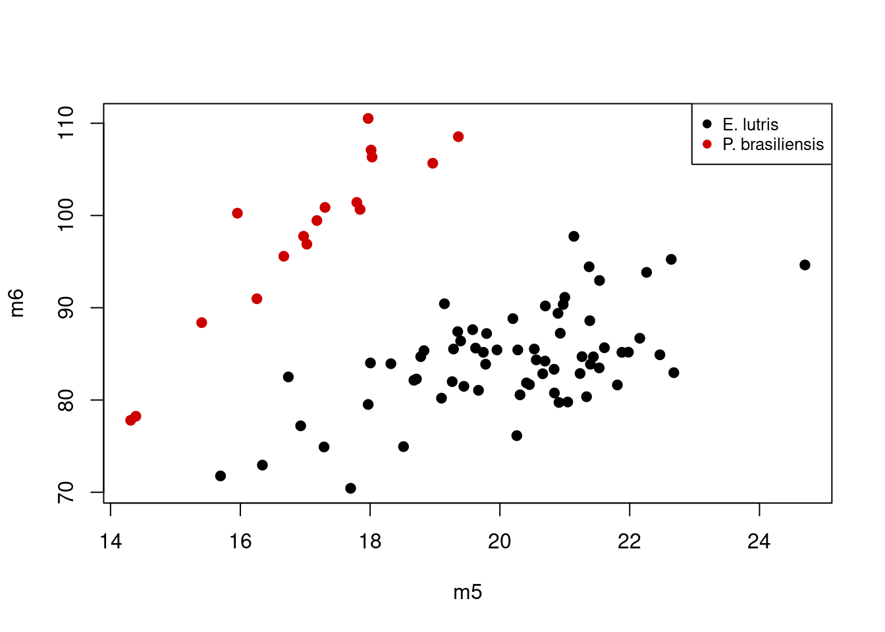
Considering the scores of PC2, P. brasilensis had low values, while E. lutris had high values. If we consider the loadings for just m5 and m6 on PC2 (0.567 and -0.44, respectively), the plot above shows what we expect: specimens with high values of PC2 (i.e. those of E. lutris), should have relatively low values of m5 and high values of m6; this contrasts with specimens with low values of PC2 (i.e. those of P. brasilensis), which are characterized by high values of m5 and low values of m6. The second principal component is thus describing variation in relative, not absolute, sizes of these four different measurements.
Final script for PCA plot
Our script for performing Principal Components Analysis and graphing the first two components should look like this:
# PCA on otter jaw measurements
# Jeff Oliver
# jcoliver@email.arizona.edu
# 2016-11-18
# Read in data
otter <- read.csv(file = "data/otter-mandible-data.csv",
stringsAsFactors = TRUE)
# Drop rows with NA
otter <- na.omit(otter)
# Renumber rows
rownames(otter) <- NULL
# Run PCA
pca_fit <- prcomp(x = otter[, -c(1:3)], scale. = TRUE)
pca_summary <- summary(pca_fit)
# Plotting results
# Pull out the unique values in the 'species' column for legend
species_names <- unique(otter$species)
# Set up a vector of colors for the *legend*
legend_cols <- c("black", "green4", "cyan3", "red3")
# Set up a vector of colors for the actual *plot*, based on values in the
# 'species' column and the legend colors vector. This vector has one element
# corresponding to each row of the otter data frame.
pt_cols <- rep(x = legend_cols[1], length = nrow(otter))
pt_cols[otter$species == species_names[2]] <- legend_cols[2]
pt_cols[otter$species == species_names[3]] <- legend_cols[3]
pt_cols[otter$species == species_names[4]] <- legend_cols[4]
# Plot the first two components
plot(x = pca_fit$x[, 1],
y = pca_fit$x[, 2],
xlab = "PC 1",
ylab = "PC 2",
pch = 19,
col = pt_cols)
legend("bottomleft",
legend = species_names,
pch = 19,
col = legend_cols,
cex = 0.8)Discriminant Function Analysis
Principal Components Analysis is useful to describe variation, especially when groups of samples are not known a priori. However, when the groups are known, one can use Discriminant Function Analysis, DFA, to see if the these groups can be differentiated based on a suite of variables. We will use the same otter data to see if we can differentiate among the four species based on the jaw measurements.
Reading data into R for DFA
# Read in data
otter <- read.csv(file = "data/otter-mandible-data.csv",
stringsAsFactors = TRUE)
# Drop rows with NA
otter <- na.omit(otter)
# Renumber rows
rownames(otter) <- NULLRunning DFA
To run a DFA, we use a function in the MASS library, an additional package of R functions. To load a package for use in R, we use the library function and include the name of the package (see below if you want to learn more about installing packages):
library("MASS")And we run DFA with a call to lda indicating which column contains our a priori groups in via the formula parameter. In this case, we pass formula = species ~ m1 + m2 + m3 + m4 + m5 + m6, which means species contains our grouping variable and the ‘m’ variables are the predictors in the analysis:
# Run DFA, allowing equal probability assignment for each of four groups
lda_fit <- lda(formula = species ~ m1 + m2 + m3 + m4 + m5 + m6,
data = otter,
prior = c(1,1,1,1)/4)We also indicate that assignment to each species is equally likely (25%) by setting the prior probabilities for group membership through the prior parameter.
Plotting DFA results
We can plot DFA results in a similar fashion as we did for PCA results. In this case we plot the scores for the first and second discriminant functions.
# Get individual values based on lda model and original measurements
lda_predict <- predict(object = lda_fit,
newdata = otter)
# Set up colors for each point, based on a priori identifications
legend_cols <- c("black", "green4", "cyan3", "red3")
pt_cols <- rep(x = legend_cols[1], length = nrow(otter))
pt_cols[otter$species == levels(otter$species)[2]] <- legend_cols[2]
pt_cols[otter$species == levels(otter$species)[3]] <- legend_cols[3]
pt_cols[otter$species == levels(otter$species)[4]] <- legend_cols[4]
# Plot scores for first (lda_predict$x[, 1]) and second (lda_predict$x[, 2])
# discriminant functions
plot(x = lda_predict$x[, 1],
y = lda_predict$x[, 2],
xlab = "LDA1",
ylab = "LDA2",
pch = 19,
col = pt_cols)
legend("topright",
legend = levels(otter$species),
cex = 0.8,
col = legend_cols,
pch = 19)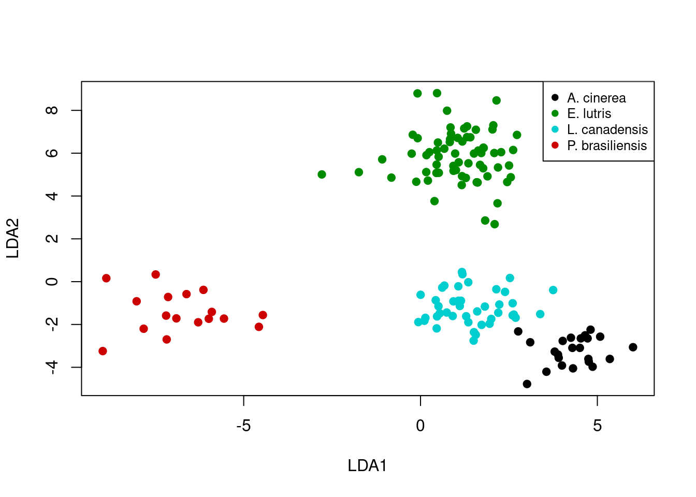
A brief interpretion of DFA results (part one)
Let’s take a look at how well the DFA did in classifying the specimens. In order to do this, we are going to call lda again, this time passing an additional argument to the CV parameter. By setting CV = TRUE, R will perform cross-validation on the model and provide posterior probabilities of group membership in the posterior object returned by lda.
lda_fit <- lda(formula = species ~ m1 + m2 + m3 + m4 + m5 + m6,
data = otter,
prior = c(1,1,1,1)/4,
CV = TRUE)To see how well the DFA does in categorizing each specimen, we use table.
table(otter$species, lda_fit$class, dnn = c("a priori", "assignment")) assignment
a priori A. cinerea E. lutris L. canadensis P. brasiliensis
A. cinerea 23 0 0 0
E. lutris 0 67 0 0
L. canadensis 0 0 42 0
P. brasiliensis 0 0 0 17In this case, we passed table two vectors:
- The a priori species identification of each sample, which is stored in
otter$species - The a posteriori assignment of each sample from the DFA, stored in
lda_fit$class
We also passed a value to the dnn parameter, which is used to label the table (“dnn” stands for dimnames names. Yes, that’s right, dimnames names. Seems repetitive to me, too). The first row of the table shows how the specimens identified as A. cinerea were assigned in the DFA - all were correctly assigned to A. cinerea. What should jump out at you in this table is that all specimens’ DFA assignments match their a priori identifications.
A brief interpretion of DFA results (part two)
But let’s take a closer look at the results. The first six rows show the assignment probabilities for six specimens:
head(lda_fit$posterior) A. cinerea E. lutris L. canadensis P. brasiliensis
1 0.9988772 1.120591e-18 1.122777e-03 3.037108e-26
2 0.9999948 3.072667e-24 5.151834e-06 1.895663e-25
3 0.9999945 8.582366e-25 5.476448e-06 2.046930e-31
4 0.9999890 7.775338e-24 1.103396e-05 1.730129e-33
5 0.9999747 4.875762e-23 2.527825e-05 1.873520e-30
6 0.9996107 3.958971e-19 3.893433e-04 1.778982e-29The lda_fit$posterior matrix holds the posterior probability of assignment to each of the four species for each row of data in the original otter data. The first row indicates the probabilities that the first observation in otter is assigned to each species. For this first observation, the only non-negligible assignment probability is to A. cinerea. For this data set, most observations are assigned with high probability to a single group.
However, some probabilities are not so trivial. Look at the values for row 88 (rounding to three decimal places):
round(lda_fit$posterior[88, ], 3) A. cinerea E. lutris L. canadensis P. brasiliensis
0.000 0.543 0.457 0.000 How can we identify those with ambiguous assignments? We could go row-by-row to see which rows have assignment ambiguity, but R wasn’t developed so we could do things by hand. So first we define our cutoff for the posterior probability. In this case, we’ll say any sample with a posterior probability less than 0.95 has an ambiguous assignment.
# Set our cutoff value for what we call unambiguous
minimum_prob <- 0.95We can then create a matrix of assignments based on this cutoff by comparing the values in lda_fit$posterior to our cutoff value, minimum_prob:
# A new matrix of logicals, with TRUE for all cells with
# posterior prob > minimum_prob
unambiguous <- lda_fit$posterior > minimum_probTaking a look at the first few rows of the unambiguous object, we see it is filled with TRUE and FALSE values:
head(unambiguous) A. cinerea E. lutris L. canadensis P. brasiliensis
1 TRUE FALSE FALSE FALSE
2 TRUE FALSE FALSE FALSE
3 TRUE FALSE FALSE FALSE
4 TRUE FALSE FALSE FALSE
5 TRUE FALSE FALSE FALSE
6 TRUE FALSE FALSE FALSEA row where the assignment probabilities for every group was below the threshold should only have values of FALSE. Take our example from row 88 as described above. The posterior probabilities were:
round(lda_fit$posterior[88, ], 3) A. cinerea E. lutris L. canadensis P. brasiliensis
0.000 0.543 0.457 0.000 And the corresponding values in our unambiguous object are:
unambiguous[88, ] A. cinerea E. lutris L. canadensis P. brasiliensis
FALSE FALSE FALSE FALSE Because we are only interested in those samples where assignment was ambiguous, we need to identify those rows where all the values are FALSE:
# New vector indicating whether sample had any assignment greater than
# minimum_prob
unambiguous_rows <- apply(X = unambiguous, MARGIN = 1, FUN = "any")
# The converse (i.e. vector indicating samples with *no* assignment greater
# than minimum_prob)
ambiguous_rows <- !unambiguous_rows
# Use this to retrieve sample information for those rows and probabilities
ambiguous_results <- otter[ambiguous_rows, c(1:3)]
ambiguous_results <- cbind(ambiguous_results, lda_fit$posterior[ambiguous_rows, ])This new data frame, ambiguous_results contains the posterior probabilities for all those samples with no assignment probabilities higher than the minimum_prob threshold. It also has the metadata associated with those samples, which we extracted from the original otter data frame. Looking at this data frame, we see there were 5 samples could not be unambiguously assigned to a group (assuming a posterior probability threshold of 0.95):
# Show only those samples which didn't have high assignment probability to any
# group
ambiguous_results species museum accession A. cinerea E. lutris L. canadensis
74 E. lutris Burke 34537 6.428127e-07 7.785889e-01 0.2214105
88 E. lutris Burke 34558 2.828393e-08 5.428820e-01 0.4571180
93 L. canadensis Burke 21177 9.692098e-02 1.938878e-13 0.9030790
130 L. canadensis TAMU 2142 3.049221e-01 2.712423e-07 0.6950776
131 L. canadensis TAMU 4212 4.434483e-01 3.973644e-09 0.5565517
P. brasiliensis
74 2.281819e-18
88 3.939901e-18
93 1.977415e-23
130 2.356272e-16
131 2.442044e-24Plotting DFA assignment probabilities (ADVANCED)
One way to visualize how well the analysis performed at distinguishing among the groups is to plot the posterior probabilities for each sample. These can be done with a stacked bar graph (much like the graphs used to visualize STRUCTURE results). The first thing we need is a two-dimensional matrix of the posterior probabilities, with each sample corresponding to a column. The lda_fit$posteriors object has samples in rows, so we can use transpose, t, to exchange the rows and columns:
posteriors <- t(lda_fit$posterior)And we can plot these posteriors with barplot:
barplot(posteriors,
ylab = "Posterior Probability")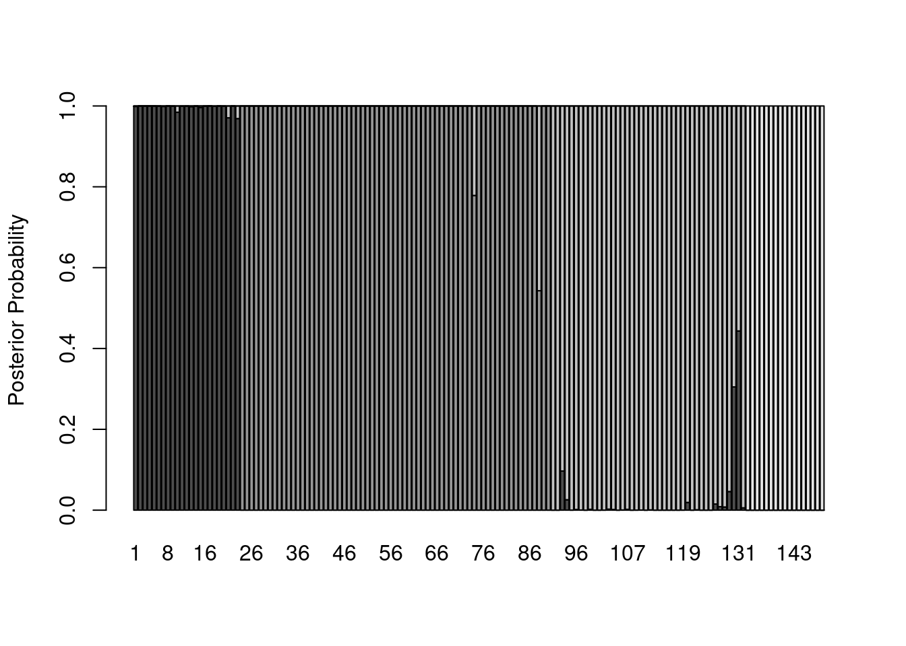
Hmmm…that’s a lot of gray. Let’s start by eliminating space between bars and getting rid of the borders:
barplot(posteriors,
ylab = "Posterior Probability",
space = 0,
border = NA)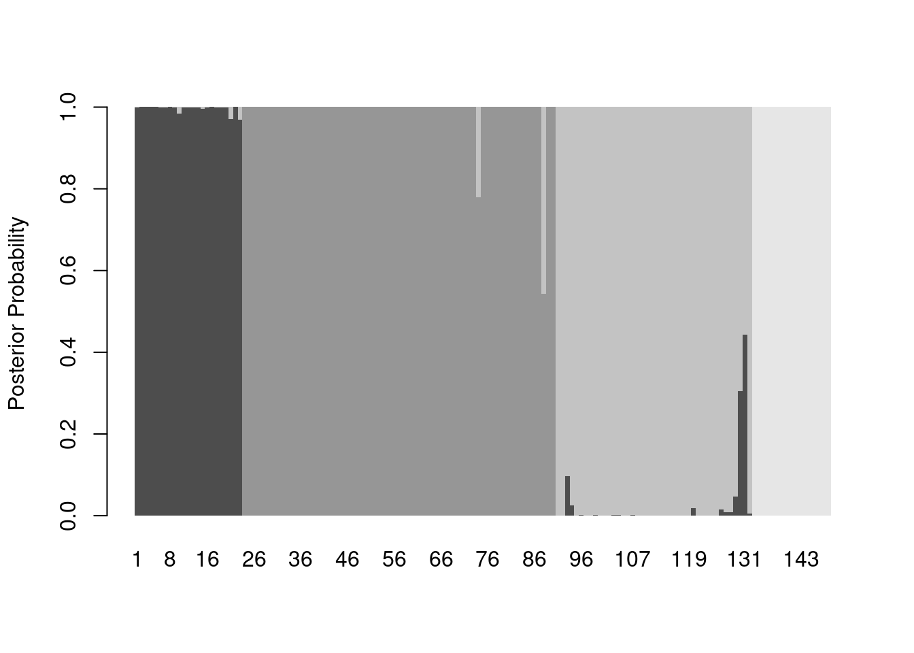
And now we can add some color, making an adjustment to the x-axis (via xlim) so the legend shows up outside the plot area:
legend_cols <- c("black", "green4", "cyan3", "red3")
barplot(posteriors,
ylab = "Posterior Probability",
space = 0,
border = NA,
xlim = c(0, ncol(posteriors) + 45),
col = legend_cols,
legend.text = levels(otter$species))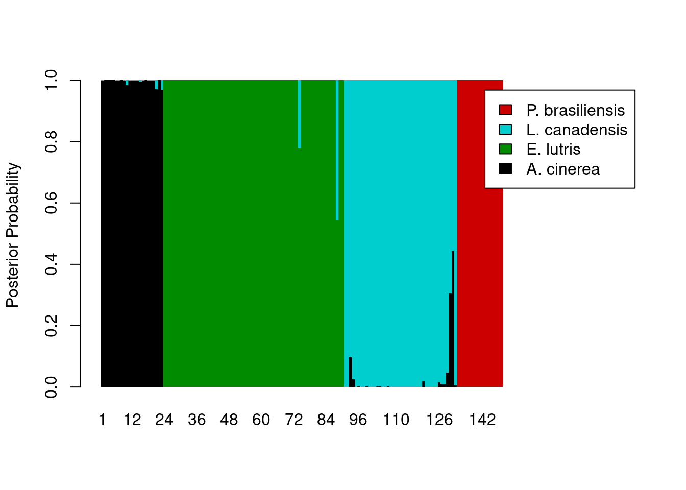
The legend still overlaps the plot, so we’ll need to pass some additional parameters to the legend maker.
legend_cols <- c("black", "green4", "cyan3", "red3")
barplot(posteriors,
ylab = "Posterior Probability",
space = 0,
border = NA,
xlim = c(0, ncol(posteriors) + 45),
col = legend_cols,
legend.text = levels(otter$species),
args.legend = list(cex = 0.7, x = ncol(posteriors) + 55, y = 0.6, xpd = TRUE))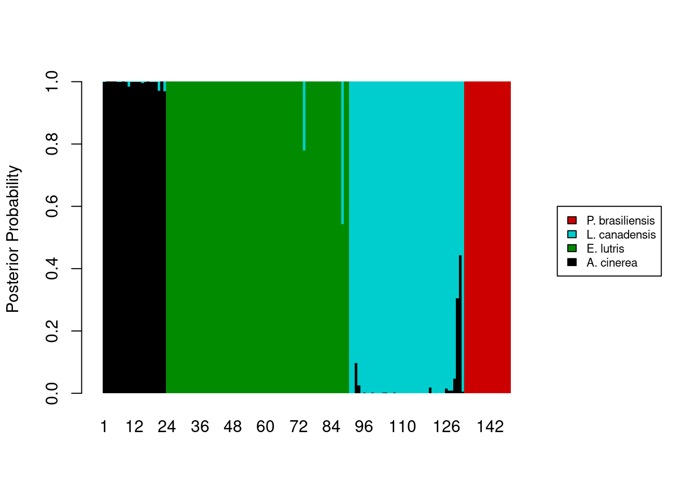
The last thing we want is to show the a priori assignments of the samples. This requires some creativity on our part. The code below assumes that the original data being fed into the lda function were already sorted by species. Two new vectors, tick_pos and label_pos, are used to add the a priori identification information to the x-axis.
tick_poswill draw five vertical tick marks on the x-axis, to serve as delimiters between species.label_posvector determines where to put the labels on the x-axis.
Because this isn’t a standard way of labeling an axis, we tell R to skip labeling the x-axis in the barplot call (xaxt = 'n'), and instead, label the axis after the plot is drawn, with a pair of calls to the axis function. I’ll leave it as an exercise for you to determine how tick_pos and label_pos are calculated (hint: documentation for match and rev will be helpful). Finally, we will need to add some more vertical space in our plot to prevent the species names on the x-axis from being cut off; we use the par function to temporarily change the margins of our plot, adding some space to the bottom margin.
# Besides the first element, which is 0, the remaining values in the vector we
# created are the cutoff points for each species. The second element takes the
# value of the position of the last occurrence of the first species, the third
# element takes the value of the position of the last occurrence of the second
# species, and so on.
tick_pos <- c(0,
nrow(otter) - match(levels(otter$species)[1], rev(otter$species)) + 1,
nrow(otter) - match(levels(otter$species)[2], rev(otter$species)) + 1,
nrow(otter) - match(levels(otter$species)[3], rev(otter$species)) + 1,
nrow(otter) - match(levels(otter$species)[4], rev(otter$species)) + 1)
label_pos <- c(floor((tick_pos[2] - tick_pos[1]) / 2),
floor((tick_pos[3] - tick_pos[2]) / 2 + tick_pos[2]),
floor((tick_pos[4] - tick_pos[3]) / 2 + tick_pos[3]),
floor((tick_pos[5] - tick_pos[4]) / 2 + tick_pos[4]))
legend_cols <- c("black", "green4", "cyan3", "red3")
# Store graphics defaults
mar_default <- c(5, 4, 4, 2) + 1 # from par documentation
par(mar = mar_default + c(2, 0, 0, 0)) # add space to bottom margin
barplot(posteriors,
ylab = "Posterior Probability",
space = 0,
border = NA,
xaxt = 'n',
xlim = c(0, ncol(posteriors) + 45),
col = legend_cols,
legend.text = levels(otter$species),
args.legend = list(cex = 0.7, x = ncol(posteriors) + 55, y = 0.6, xpd = TRUE))
# Add tick marks
axis(side = 1,
at = tick_pos,
labels = FALSE)
# Add axis labels
axis(side = 1,
at = label_pos,
labels = levels(otter$species),
tick = FALSE,
par(las = 2, cex = 0.8))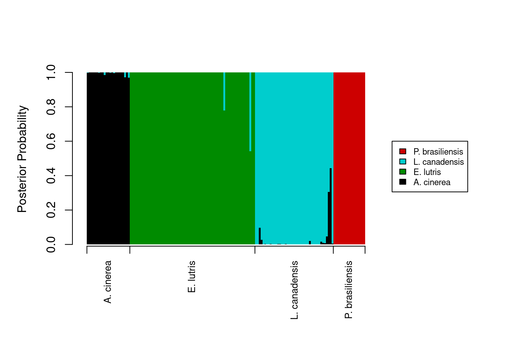
# Restore graphics defaults
par(mar = mar_default)Final script for DFA posteriors
The final script for running the DFA and creating the barplot of posterior probabilities would then be:
# DFA on otter jaw measurements
# Jeff Oliver
# jcoliver@email.arizona.edu
# 2016-11-18
# Read in data
otter <- read.csv(file = "data/otter-mandible-data.csv",
stringsAsFactors = TRUE)
# Drop rows with NA
otter <- na.omit(otter)
# Renumber rows
rownames(otter) <- NULL
# Load MASS library
library("MASS")
# Run DFA
lda_fit <- lda(formula = species ~ m1 + m2 + m3 + m4 + m5 + m6,
data = otter,
prior = c(1,1,1,1)/4,
CV = TRUE)
# Setup vectors for labeling x-axis with a priori assignments.
# Besides the first element, which is 0, the remaining values in the vector we
# created are the cutoff points for each species. The second element takes the
# value of the position of the last occurrence of the first species, the third
# element takes the value of the position of the last occurrence of the second
# species, and so on.
tick_pos <- c(0,
nrow(otter) - match(levels(otter$species)[1], rev(otter$species)) + 1,
nrow(otter) - match(levels(otter$species)[2], rev(otter$species)) + 1,
nrow(otter) - match(levels(otter$species)[3], rev(otter$species)) + 1,
nrow(otter) - match(levels(otter$species)[4], rev(otter$species)) + 1)
label_pos <- c(floor((tick_pos[2] - tick_pos[1]) / 2),
floor((tick_pos[3] - tick_pos[2]) / 2 + tick_pos[2]),
floor((tick_pos[4] - tick_pos[3]) / 2 + tick_pos[3]),
floor((tick_pos[5] - tick_pos[4]) / 2 + tick_pos[4]))
legend_cols <- c("black", "green4", "cyan3", "red3")
# Store graphics defaults
mar_default <- c(5, 4, 4, 2) + 1 # from par documentation
par(mar = mar_default + c(2, 0, 0, 0)) # add space to bottom margin
barplot(posteriors,
ylab = "Posterior Probability",
space = 0,
border = NA,
xaxt = 'n',
xlim = c(0, ncol(posteriors) + 45),
col = legend_cols,
legend.text = levels(otter$species),
args.legend = list(cex = 0.7, x = ncol(posteriors) + 55, y = 0.6, xpd = TRUE))
# Add x-axis labels
axis(side = 1, at = tick_pos, labels = FALSE) # tick marks
axis(side = 1, at = label_pos, labels = levels(otter$species), tick = FALSE, par(las = 2, cex = 0.8))
# Restore graphics defaults
par(mar = mar_default)Additional resources
General multivariate analyses:
- Manly, B.F.J. 2004. Multivariate Statistical Methods: a primer. Chapman & Hall, Boca Raton. For University of Arizona affiliates, there is an online version of this book at https://arizona-primo.hosted.exlibrisgroup.com/permalink/f/evot53/01UA_ALMA21407247900003843.
PCA
DFA
Installing R packages
Note that if a package is not installed on your machine, a call to library will throw an error, indicating the package has to be installed first. For example, if we were to load a package called mustelid without installing it first:
library("mustelid")Error in library("mustelid"): there is no package called 'mustelid'So how do I install packages? you ask. With install.packages:
install.packages("mustelid")
library("mustelid")(note there is no R package called “mustelid”, so no matter how hard you try, this example will always end in failure)